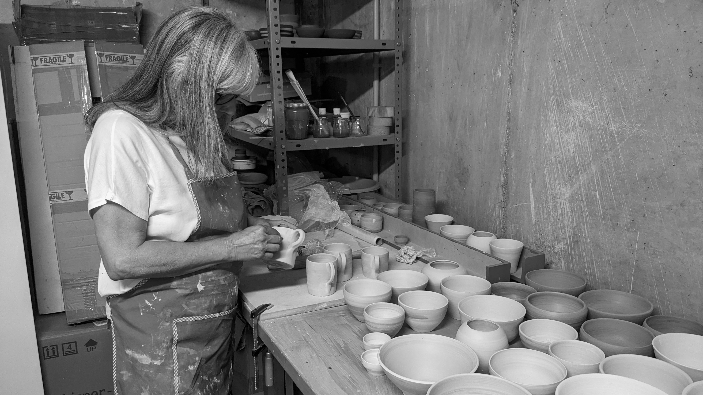

Conoce a Marisol, la artista detrás de la alfarería artesanal
El taller
En nuestro taller de alfarería artesanal, estamos comprometidos con la creación de piezas únicas y llenas de vida.
La artista, Marisol, ha encontrado su verdadera pasión en la creación de piezas de cerámica, y su dedicación y talento se reflejan en cada una de sus creaciones.
Nuestros Servicios
- Piezas únicas de cerámica torneadas, pintadas y esmaltadas a mano, de principio a fin.
- Personalización de piezas según tus preferencias
Contacto
No dudes en ponerte en contacto con nosotros si tienes alguna pregunta o estás interesado en nuestros servicios. Estamos disponibles por teléfono y correo electrónico.
- Teléfono: +91 987 654 321
- Correo electrónico: alfareria@gmail.com